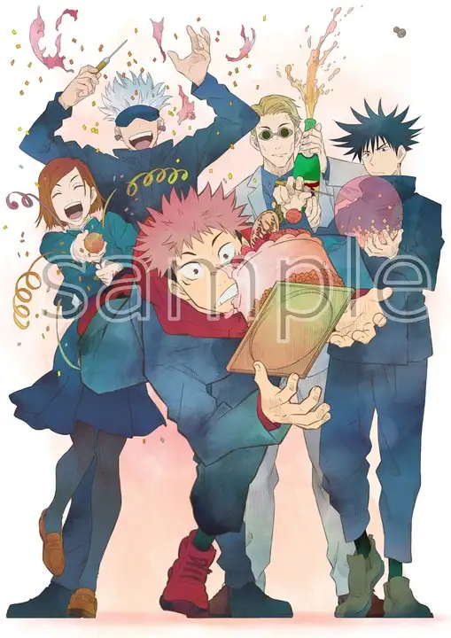

3/21
今日は春分の日ですが、祝日ということもあり人が多いためどこにも出掛けませんでした
しかし仕事場で私関係の問題が発生していたようで自分はそれに気づかず寝てしまってました。
上司から電話がかかってきていたようだがそれに気づかなかったのが本当に申し訳ない。
明日から仕事だから頑張らないとな
昨日は大好きな虎杖悠仁くんの誕生日でした！可愛いゆうじくんの誕生日おでたい！MAPPAからでた ゆうじくん誕生日記念グッズ早速予約しました。ななみが微笑んでるの尊いなぁ
前に恵の誕生日記念のやつも買いましたが、届くのに時間がかかりましたが、めちゃくちゃイラストが尊くて受注生産なだけあって すごく仕上がりが良かったので次も届くの楽しみです。
気になる方はこちら、MAPPAオンラインストアを見て見てください！

さっ、明日も仕事頑張りますか、憂鬱だけど働かないと生活できないので頑張ります
みなさんもいい一週間をお過ごしください！
3/22
本日は一日お仕事でした。私の今やっている仕事内容を詳しく言いますと、病院の受付と事務、患者様のお会計となります。
今日は私の病院が一番混む日になりますが、想像していたより人はこなかったです、雨と寒さの影響でしょうか、今日は三月末とは思えない冷え込みでした。 先週の大きな地震の影響と今日の寒さで電力供給が追いつかないとかで、計画停電がおこるかもとニュースになっていました。でも家帰って速攻で暖房つけたし、洗濯した笑
受付の仕事、お会計、事務仕事等々を数人で臨機応変に手分けして行います。お会計の部分が一番難しく、医師が指定した薬を入力したり、検査内容をレセプトコンピューターに 打ち込んでいきます。先生がカルテに書いてある内容を見てすぐに的確に入力して行くのはすごく難しいです。
自分は一年経ちましたが、このお会計の作業がとても苦手です。自分は何かをじっくり考えて仕事をするのが好きですが、反射作業のように 仕事をこなすのは向いていないのかなとたまに思います。今日もこのブログを更新できたことが一番嬉しいことです。
明日頑張ればお休みなので、明日も頑張っていきます！おやすみなさい！
3/23
今日も一日お仕事頑張りました。4月から入る新卒の子を何回か助けることができて良かったです。きっとあっという間に追い抜かれてしまうのかなと思います。
明日がお休みということもあり、今日は夜更かしします。時間的にはもう次の日の24日です笑
夜更かしとしてアマゾンプライムでアニメ『明日ちゃんのセーラー服』を観ました。前から気になっていた作品だったので見れて本当に良かったです。 見はじめてから思ったのが、浄化される、全人類このアニメ見るべきやろって感じです。もうなんか、一話で泣きそうになりましたし、最近あまり観ないタイプのアニメでした。
日常系の癒しがありつつ、いろいろなフェチズムを満たしてくれますし、たまに可愛すぎて叫びます。明日ちゃんがとにかく可愛いのと、綺麗なのと、素敵でエッチなのが最高です。
可愛い女子中学生の日常を描いたストーリーは本当に心を癒してくれます。仕事の疲れが飛びました。そして私もセーラー服着たかったとなりました。
私も高校がちょうど女子校だったので、この学校ほどお嬢様が通うような上品さはないですが、女子だけの空間とそこでの青春を思い出しました。最高です。
明日時間ができたら続き見ようと思います。今はまだ第四話！続き楽しみ！
3/24
今日はお休みだったため、最寄りから一駅離れたスーパーと本屋さんへいきました。家に食べるものが本当になかったので 必要なもの多めに買いました。
そして、一番の目的はプログラミングの教本を買うことです。LINUXの基礎本とGitの基礎、javaの基礎学習本を買いました。 結構大きい本屋でしたが、プログラミング関連の本は棚二つぶんと少なかったです。改めて思ったのが、プログラミングの奥の深さと 勉強しないといけない範囲が多いことです。
今日は予め買う本の内容は決めていましたが、ほかにもたくさん必要な知識が詰まった教本がたくさんありました。エンジニアへの道が 遠いのを実感しました。
でも、不思議とめげそうにはならなかったですし、むしろ早く帰って勉強しようという気持ちになった。本を買って早く勉強したいって思ったのは 人生ではじめてかもしれない。受験の時の教本やTOEIC中国語検定用の本を買ったときは買って満足して勉強したい、しようとはならなったので不思議です。
Linuxのインストールと教本を使って基礎コマンドを勉強しました。前にオンラインで勉強した時よりすごく理解できたし、身に付きました。
夜に肉じゃがを作りました。明日はお昼肉じゃがだー！
3/25
今日は朝からお仕事して、二時間以上も残業しました。帰りは１０時で家についたのは１１時近くでした。
明日はお休みなので、またまた夜更かしです。シフト制のいいところは連勤が少なく、すぐに休みがくるところですね。 でも休業も多いから給料減るけど、
本当は早くに終わって金ロの塔の上のラプンツェルを見たかったですが、診察が本当に終わらなくて最悪でした。 帰った時には腹ペコでしたので、大きめののお弁当を食べながら、明日ちゃんのセーラー服を続きから一気に最新話まで観ました。
作画がめっちゃ綺麗で内容も素敵で心洗われました。GITのところを勉強しようと思いましたが、今日はGIThubのインストールまでしました。
明日は本格的にGitの勉強を詰めていきます。今日は本当に疲れたので、お酒飲んでアニメ見て、ゆっくり寝ます。お休み！
3/27
今日は朝仕事に行こうといつも通り家を出たら、ちょうど電車が止まっていました。運転再開見込みは一時間後で、タクシーを使おう としましたが、すでに大行列！絶望的でしたが、赤羽根までいけば電車があるので、自転車があるため覚悟して３０分以上の道のりをいくことにしました。
はじめて自転車で埼玉から東京へ渡りました。荒川の上の景色は正直言って最高でした。汗をかきながら、北赤羽駅まで行くと、 電車が運転再開していたので、急いで乗り込みました。本当に最悪でした。
でも、よかったこともあります。帰り道にある浮間舟渡駅近くの大きな公園の桜がとても見頃で、一人で夜桜を堪能できました。
散々な1日でありながら、綺麗な桜と景色がみれたからよかったと思います。明日はいよいよお出かけなので、めっちゃ楽しみ！！